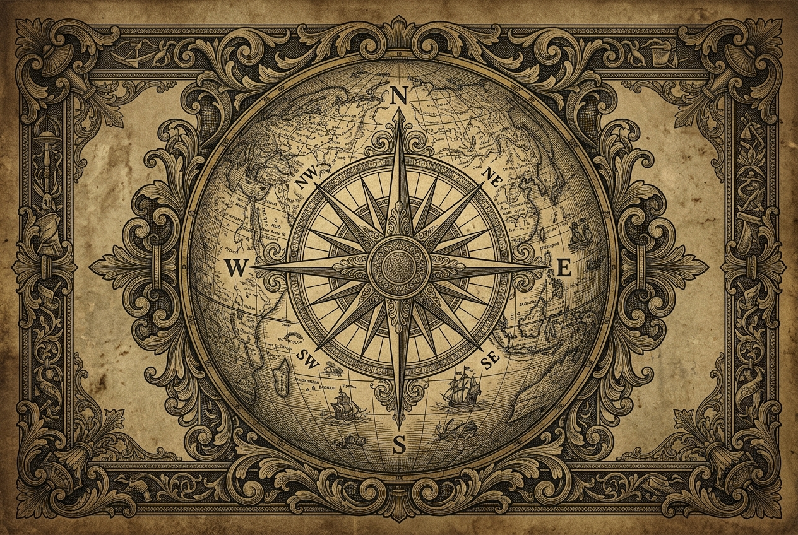

Tư tưởng Hồ Chí Minh: Đưa Việt Nam vào quỹ đạo chung của nhân loại
Hồ Chí Minh là người Việt Nam đầu tiên nhận ra rằng vận mệnh của mỗi quốc gia không thể tách rời nhân loại. Người đặt ra câu hỏi cốt lõi: Làm thế nào để "làm bạn với tất cả mọi nước dân chủ" mà không đánh mất bản sắc dân tộc?
Hồ Chí Minh sớm nhận ra xu thế thời đại: phong trào giải phóng dân tộc gắn liền với cuộc đấu tranh của giai cấp vô sản quốc tế.
Đoàn kết quốc tế không phải là sách lược tạm thời mà là mục tiêu chiến lược nhất quán trong toàn bộ tư tưởng Hồ Chí Minh.
Kết hợp sức mạnh dân tộc với sức mạnh thời đại — đây là phép biện chứng xuất sắc nhất trong tư tưởng ngoại giao Hồ Chí Minh.
Sự cần thiết, lực lượng và nguyên tắc của đoàn kết quốc tế

Việt Nam kết nối với nhân loại qua tư tưởng đoàn kết
Hồ Chí Minh nhận thức sâu sắc rằng cuộc cách mạng giải phóng dân tộc Việt Nam nếu chỉ dựa vào sức mình thì chưa đủ. Người viết: "Muốn người ta giúp cho, thì trước mình phải tự giúp lấy mình đã."
Cách mạng Việt Nam là bộ phận của cách mạng thế giới. Thắng lợi của cách mạng thế giới là điều kiện cho thắng lợi của cách mạng Việt Nam.
Gồm: giai cấp vô sản quốc tế, phong trào giải phóng dân tộc, và lực lượng yêu chuộng hòa bình dân chủ trên toàn thế giới.
Độc lập dân tộc gắn liền với chủ nghĩa xã hội; lợi ích dân tộc gắn với lợi ích quốc tế vô sản.
Mục tiêu chiến lược nhất quán — không phải sách lược tạm thời
Hồ Chí Minh khẳng định năm 1947: Việt Nam muốn làm bạn với tất cả mọi nước dân chủ và không gây thù oán với ai. Đây là định hướng ngoại giao chiến lược lâu dài, không phải cơ hội nhất thời.
Đoàn kết dựa trên nguyên tắc bình đẳng, không can thiệp nội bộ, tôn trọng chủ quyền lẫn nhau — không phải lệ thuộc hay khuất phục.
Mục tiêu độc lập, tự do, hạnh phúc là bất biến; phương thức, sách lược có thể linh hoạt theo hoàn cảnh. Đây là phép biện chứng xuất sắc của Hồ Chí Minh.
Hồ Chí Minh nhấn mạnh: "Thực lực là cái chiêng, ngoại giao là cái tiếng, chiêng có to tiếng mới lớn." Sức mạnh nội sinh là nền tảng của mọi liên kết quốc tế.
Hồ Chí Minh đã xây dựng thành công Mặt trận nhân dân thế giới ủng hộ cuộc kháng chiến của Việt Nam, bao gồm: nhân dân các nước xã hội chủ nghĩa, phong trào cộng sản và công nhân quốc tế, phong trào không liên kết, và nhân dân tiến bộ trên toàn thế giới kể cả nhân dân Pháp, Mỹ. Đây là thành tựu ngoại giao phi thường trong điều kiện một nước nhỏ chống lại các đế quốc lớn.
Người đặc biệt chú trọng tranh thủ sự ủng hộ của nhân dân yêu chuộng hòa bình ở các nước đế quốc đang xâm lược Việt Nam. Hồ Chí Minh phân biệt rõ: Nhân dân Pháp, nhân dân Mỹ không phải là kẻ thù của nhân dân Việt Nam — đây là cách tư duy ngoại giao vô cùng tinh tế.
Hồ Chí Minh coi trọng việc tham gia các tổ chức quốc tế: Liên Hợp Quốc, các tổ chức khu vực, và phong trào Không liên kết. Người nhận ra rằng sức mạnh của luật pháp quốc tế và diễn đàn quốc tế là công cụ quan trọng để bảo vệ quyền lợi của các nước nhỏ trước các cường quốc.
Thực lực là cái chiêng, ngoại giao là cái tiếng,— Hồ Chí Minh
chiêng có to tiếng mới lớn.
Đoàn kết quốc tế theo phong cách Hồ Chí Minh không phải là sự sao chép máy móc hay đồng hóa văn hóa. Người khẳng định: tiếp thu tinh hoa nhân loại phải trên cơ sở giữ vững bản sắc dân tộc.
Hồ Chí Minh lấy văn hóa dân tộc làm nền tảng để tiếp biến tinh hoa nhân loại: "Văn hóa là sợi dây kết nối tâm hồn các dân tộc; nhưng mỗi dân tộc phải có tâm hồn của mình."
Sự liên kết quốc tế chỉ phát huy hiệu quả khi dựa trên nền tảng nội lực vững chắc: kinh tế, quân sự, văn hóa và sự đoàn kết trong nước.
Nguyên tắc: "Hòa nhập nhưng không hòa tan" — Việt Nam tham gia đầy đủ vào cộng đồng quốc tế trong khi vẫn duy trì và phát huy bản sắc văn hóa, ngôn ngữ, và giá trị truyền thống.
Minh chứng lịch sử và thực tiễn hiện đại khẳng định tính đúng đắn của tư tưởng Hồ Chí Minh
Tư tưởng Hồ Chí Minh về đoàn kết quốc tế là sự vận dụng sáng tạo chủ nghĩa Mác-Lênin vào điều kiện cụ thể của Việt Nam — một nước thuộc địa nhỏ đang đấu tranh giành độc lập.
Người không sao chép nguyên xi mà sáng tạo và bổ sung: đưa phong trào giải phóng dân tộc vào hệ thống lực lượng cách mạng thế giới.
Góp phần làm phong phú thêm lý luận Mác-Lênin về cách mạng ở các nước thuộc địa và phụ thuộc, trở thành đóng góp lý luận quan trọng của Việt Nam vào kho tàng tri thức nhân loại.
Nguyễn Ái Quốc gửi Bản yêu sách của nhân dân An Nam đến Hội nghị Vécxây — bước đầu tiên đưa Việt Nam ra với thế giới, đòi các quyền tự do cơ bản dựa trên nguyên tắc tự quyết dân tộc.
Nguyễn Ái Quốc bỏ phiếu tán thành gia nhập Quốc tế Cộng sản (Quốc tế III) tại Đại hội Tours, Pháp — tìm ra con đường cách mạng vô sản cho Việt Nam.
Hồ Chí Minh tích cực xây dựng mặt trận nhân dân thế giới ủng hộ Việt Nam, tranh thủ sự đồng tình của nhân dân tiến bộ quốc tế.
Tư tưởng "Làm bạn với tất cả các nước dân chủ" (1947) trở thành kim chỉ nam ngoại giao. Việt Nam tranh thủ được sự ủng hộ rộng rãi của cộng đồng quốc tế.
Việt Nam trở thành thành viên chính thức của ASEAN — hiện thực hóa tư tưởng hội nhập khu vực, mở ra kỷ nguyên hợp tác đa phương trong hòa bình.
Việt Nam chính thức là thành viên của Tổ chức Thương mại Thế giới (WTO) — cột mốc hội nhập kinh tế quốc tế sâu rộng, khẳng định vị thế trên bản đồ kinh tế toàn cầu.
Việt Nam cử lực lượng gìn giữ hòa bình LHQ (mũ nồi xanh) đến Nam Sudan và Trung Phi — từ nước được cộng đồng quốc tế hỗ trợ trở thành nước đóng góp cho hòa bình thế giới.
Việt Nam đảm nhiệm vai trò Ủy viên không thường trực Hội đồng Bảo an LHQ — khẳng định Việt Nam là "đối tác tin cậy và thành viên có trách nhiệm của cộng đồng quốc tế".
Trách nhiệm của trí thức trẻ trong xây dựng hình ảnh Việt Nam có trách nhiệm trong cộng đồng quốc tế
Thế hệ trí thức trẻ hôm nay là người kế thừa và phát huy di sản tư tưởng Hồ Chí Minh trong điều kiện thế giới mới — toàn cầu hóa, số hóa và đa cực. Nhiệm vụ là vừa hồng vừa chuyên: giỏi chuyên môn, vững lý tưởng, sẵn sàng hội nhập.
Di sản vĩ đại nhất Hồ Chí Minh để lại không chỉ là thắng lợi lịch sử, mà là tư tưởng và phương pháp — để mỗi thế hệ người Việt tiếp tục hành trình đặt Việt Nam vào đúng quỹ đạo của nhân loại.
Kiểm Tra Kiến ThứcHãy kiểm tra hiểu biết về Tư tưởng Hồ Chí Minh
Tham gia trò chơi trắc nghiệm trực tiếp cùng cả lớp với 10 câu hỏi thú vị về tư tưởng Hồ Chí Minh
Quét QR để tham gia
Điền mã PIN do giáo viên cung cấpLàm bài quiz theo tốc độ của riêng bạn, xem kết quả và bảng xếp hạng ngay lập tức
Quét QR để tham gia
Hoặc nhập mã game từ thầy/cô